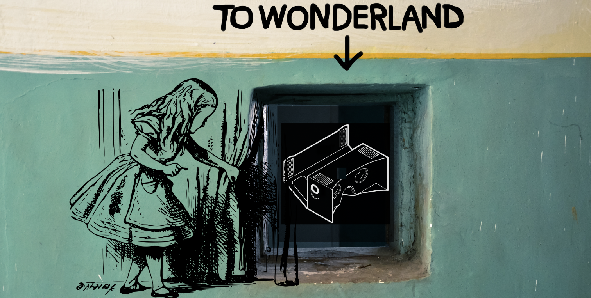
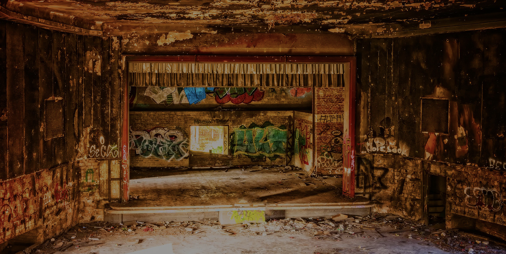
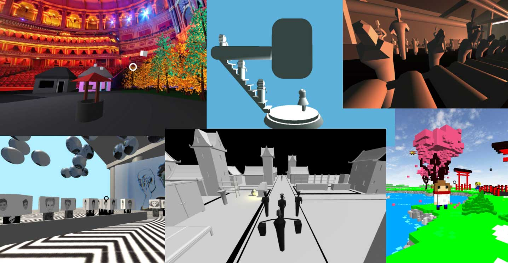

Modelling. Virtual. Realities.
for the Humanities
Øyvind Eide, Jan Wieners, Zoe Schubert
Institute for Digital Humanities, University of Cologne, Germany
The 4th International Symposium on Intermedial Studies:
Intermedial Practice and Theory in Comparison
Hangzhou, China, 15th – 18th November 2018
- Institute for Digital Humanities
University of Cologne, Germany
- Research
#media #culture #theatre #cinema #3D #VR #modeling #visualization #programming
 Dr. Jan G. Wieners
Dr. Jan G. Wieners
Overview
Virtual
Reality
Modelling
Virtual
One Gate to enter VR
Smartphone + Cardboard + Website with WebVR
"We may still have to wait a few years to see whether the promises and threats initially associated with VR will materialize. But we don’t have to wait for their realization to explore the perspective that the idea of VR opens on representation"[Ryan, Narrative as virtual reality 2, 2015]
Content for Virtual Reality Spaces
Reality
Theater in VR
Staging Virtual Space
‘Zeigt, daß ihr zeigt!’ [Bertolt Brecht]
Creation and Equipping of Virtual Spaces:
Modelling Virtual Worlds
Modelling
Theatre: Characteristics
Interaction, communication through active reception
Co-presence (spatial-temporal)
Liveness
Uniqueness
Space for Theatre in VR
Virtual Reality Space
Conclusion